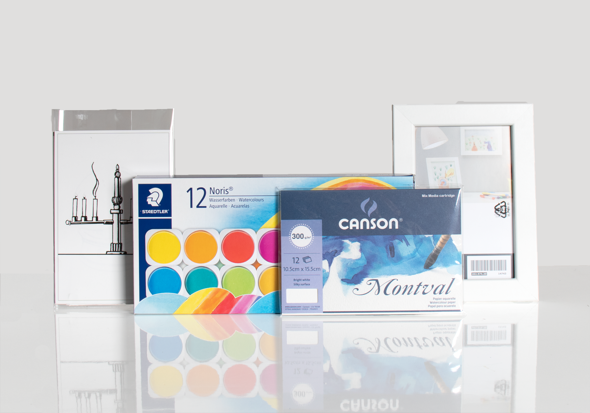
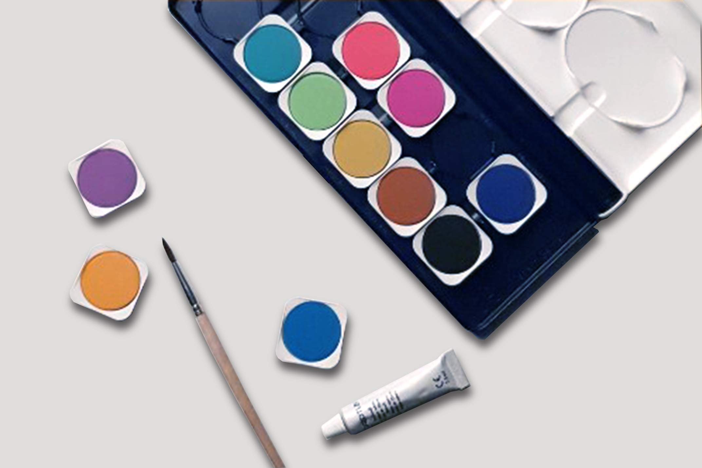
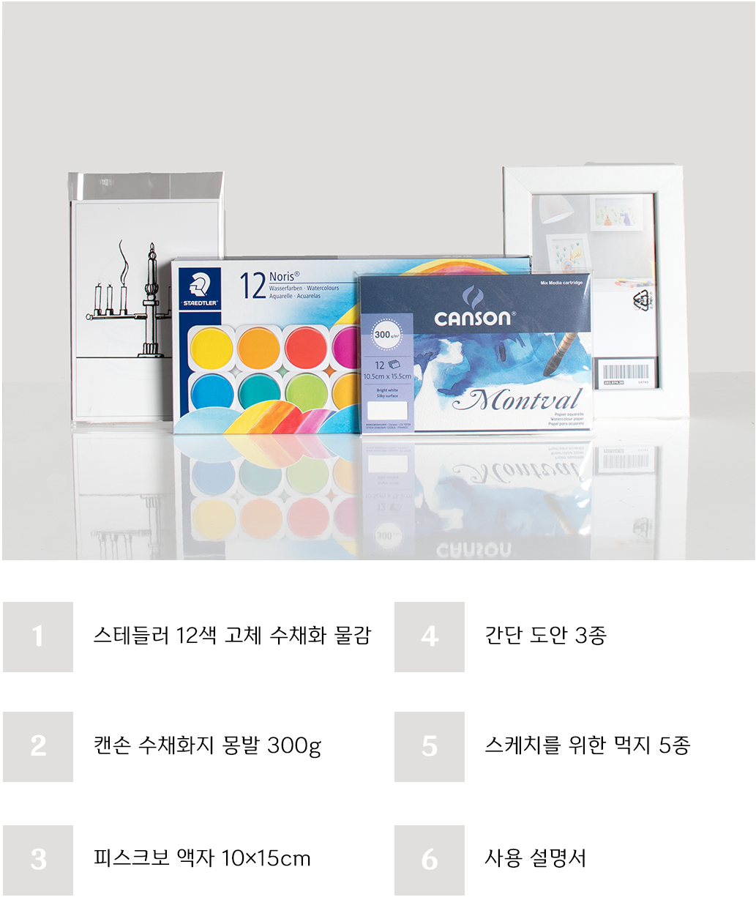
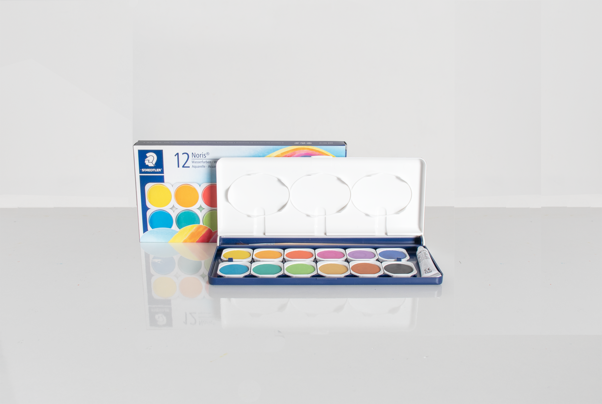

나만의 수채화 액자 만들기
 나만의 수채화 액자 키트를 통해 수채화 액자를 만들어 보세요.
준비된 수채화 키트를 활용해서 나만의 액자를 만들 수도 있습니다.
다양한 그림으로 당신의 방을 마음껏 꾸며보세요!
나만의 수채화 액자 키트를 통해 수채화 액자를 만들어 보세요.
준비된 수채화 키트를 활용해서 나만의 액자를 만들 수도 있습니다.
다양한 그림으로 당신의 방을 마음껏 꾸며보세요!


사용자가 번거롭게 수채화를 준비할 필요 없이 미리 준비된 물감으로 손쉽게 색칠하세요.
스테들러 12색 고체 수채화 물감은 휴대화 관리가 편합니다.
또한 작은 붓이 포함되어 있습니다.
뚜껑을 파레트처럼 사용 할 수 있어 파레트가 따로 필요하지 않습니다.
처음 어떤 그림을 그려야 할지 막막한 분든을 위해 도안 3종이 준비되어 있습니다.
초보자분들을 위해 색칠하기 쉬운 동안 위주로 준비했습니다.
또한 도안을 따라 그리기 쉽도록 먹지 5장이 포함되어 있습니다.
한 장당 3번정도 스케치가 가능합니다.
자신만의 스케치가 있다면 굳이 도안을 사용하지 않아도 멋있는 그림을 그릴 수 있습니다.
스케치가 능숙하신 분들은 먹지를 사용하지 않으셔도 좋습니다.
캔손 몽발 300g 수채화지를 사용해 더 깊이감 있는 그림을 그려보세요!
총 12장이 들어있어 도안을 활용하지 않은 자신만의 그림을 마음껏 그리는 것이 가능합니다.
액자와 비슷한 사이즈로 손쉽게 크기를 가늠 할 수 있습니다.
물을 오래 머금고 있어 초보자들도 쉽게 사용 할 수 있습니다.
액자는 가볍고 안전한 액자를 준비했습니다.
블랙과 화이트 둘 중 한가지를 선택하실 수 있습니다.
유리가 아닌 아크릴을 사용하여 안전성이 높아 아이들과 함께 사용하기도 좋습니다.
책상위에도 놓을 수 있고, 벽에도 걸어둘 수 있어 여러 방식으로 장식 할 수 있습니다.
수채화지 위에 먹지를 올려놓고 그위에 그림 도안을 올려주세요. 다음에 도안을 따라 그려주세요.
바로 수채화지에 자신이 그릴 그림을 그려도 좋고 먹지를 이용해 자신이 그린 도안을 따라 그릴 수도 있습니다.
Tip.
수채화지에 먹지를 올릴 때는 무늬가 있는 쪽이 위를 바라보게 올려놔 주세요.
반대로 놓는다면 스캐치가 되지 않습니다.
함께 온 물감으로 채색을 해줍니다.
채색이 완료됐다면 그려준 테두리를 따라 잘라준 후 액자를 꺼내 그림을 넣어줍니다.
완성된 액자를 책상과 벽에 자유롭게 배치 해 보세요!
여러가지 새로운 그림을 그려도안을 바꿔봅시다.